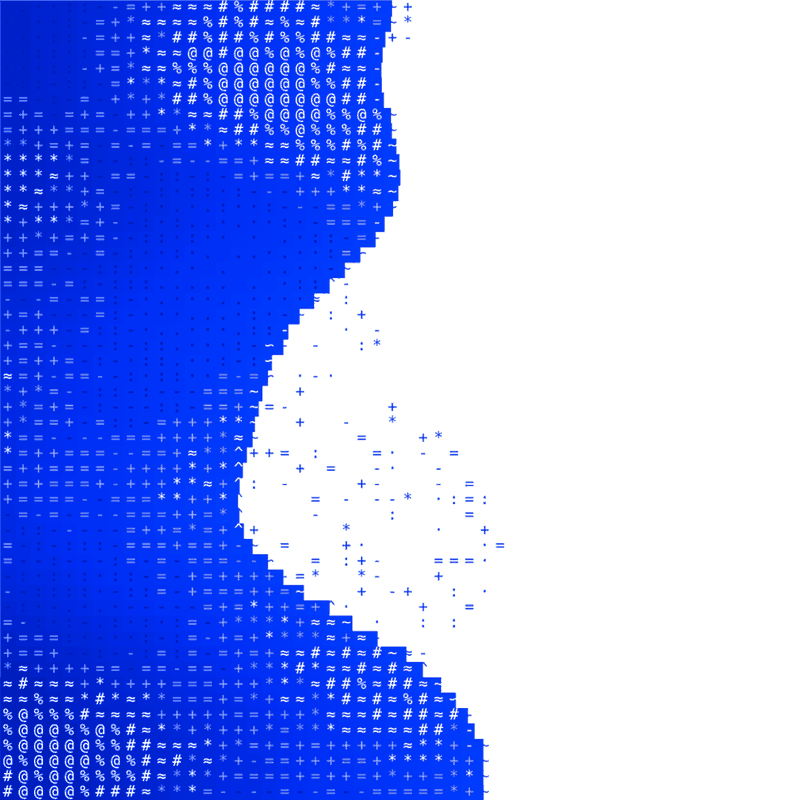
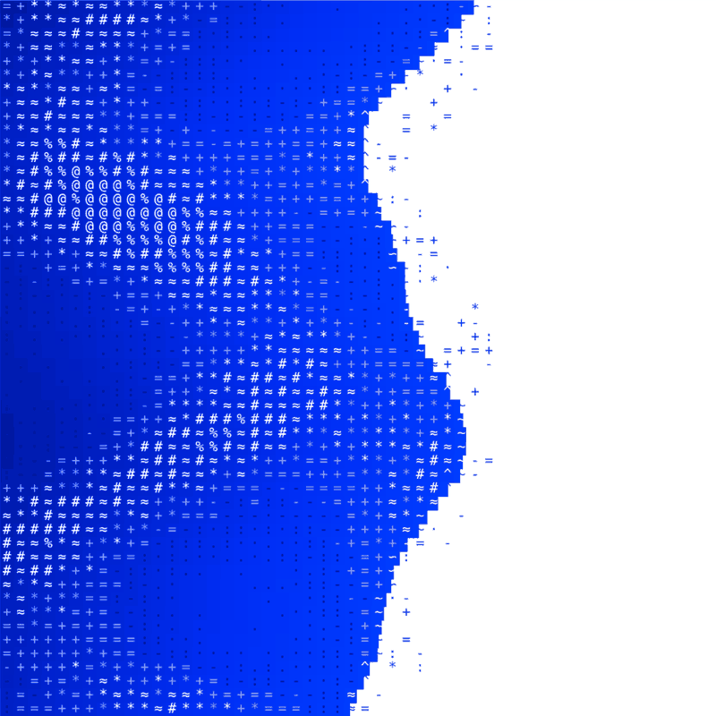
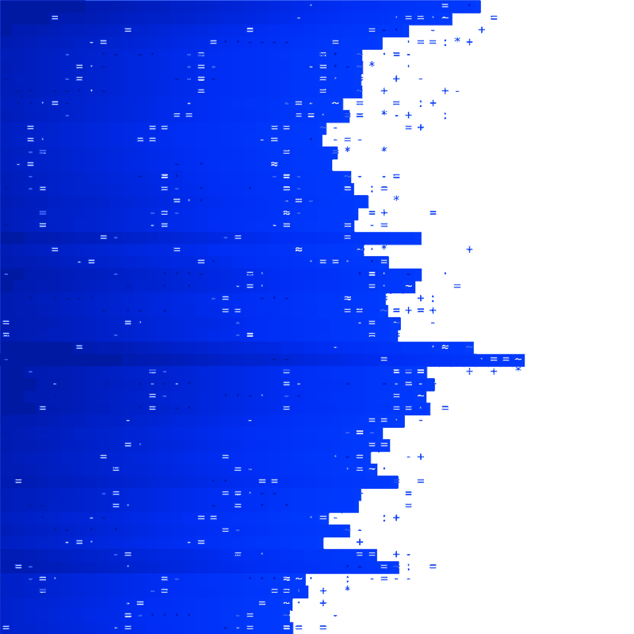

Tide Loader
An ASCII ocean loader. Blue water washes into a white square from the left, pulls back, leaves grains of sand, and comes in again.
Smooth
Strips
Loading

Smooth /smooth Strips /stripsEndless

Smooth, endless /smooth-endless
Strips, endless /strips-endless